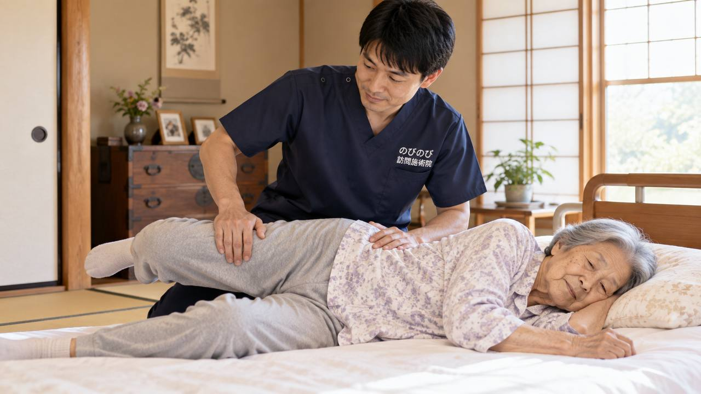

食事のたびにむせる、食後に声がガラガラする、飲み込むのに時間がかかる。こうした変化が続くと、ご家族は誤嚥性肺炎を心配されます。ここでは、なぜむせが増えるのか、どこから受診が必要か、そして訪問の鍼灸に何ができて何ができないのかを、正直にご説明します。
結論から先に。鍼やお灸で誤嚥性肺炎を防げると言い切ることはできません。飲み込みの力の評価や訓練は、医師・歯科医師・言語聴覚士が担う領域です。訪問の鍼灸ができるのは、首や肩、背中のこわばりを和らげて、あごを引いた飲み込みやすい姿勢を保ちやすくする補いです。医師が必要と認めた慢性の痛みなどが対象で、1回の施術は総額3,950円、1割の方でおよそ395円です。
なぜ高齢になると「むせ」が増えるのか
年を重ねると、食べ物や飲み物を飲み込む力（嚥下の力）が少しずつ衰えていきます。飲み込むときにのどを動かす筋肉が弱ったり、むせて追い出す反射がにぶくなったりすると、食べ物や唾液が本来の食道ではなく気管のほうへ入りやすくなります。これを誤嚥といいます。
食事のたびにむせる、食後に声がガラガラする、飲み込むのに時間がかかる、食べる量が減ってきた。こうした変化は、飲み込みの力が落ちてきているサインかもしれません。首や肩、口まわりの動きが硬くなっていることも、飲み込みにくさに関わります。
誤嚥性肺炎とは、どんな病気か
誤嚥した食べ物や唾液に含まれる細菌が気管から肺に入り、肺で炎症を起こしてしまうのが誤嚥性肺炎です。高齢の方では、はっきりした熱やせきが出ないまま、なんとなく元気がない、食欲がない、ぼんやりしているといった形であらわれることもあり、気づきにくいのが怖いところです。
夜、寝ているあいだに唾液を少しずつ誤嚥して起こることもあります。そのため、日ごろから飲み込みやすい状態と口の中を清潔に保ち、誤嚥そのものを減らしていく心がけが土台になります。
熱・むせ込み・息苦しさがあるときは、すぐ医療機関へ
先にいちばん大事なことをお伝えします。発熱が続いている、食事のたびに激しくむせ込む、痰がからんで呼吸が苦しそう、急に元気がなくなった、ぐったりしている。こうしたときは、迷わずかかりつけ医や医療機関を受診してください。誤嚥性肺炎は早く手当てすることが何より大切です。
また、飲み込みの力そのものを調べて評価するのは、医師や歯科医師、言語聴覚士（ST）といった専門職の役割です。「最近むせが増えた」と感じたら、まずはこうした専門職に相談し、食事の形や姿勢についての助言を受けることをおすすめします。鍼灸は、その助言を受けたうえでの補いとして考えるものです。
鍼灸で誤嚥性肺炎は防げる？できること・できないこと
正直にお伝えすると、鍼やお灸で誤嚥性肺炎を防げると言い切ることはできません。飲み込みの力の評価や訓練は、先に触れたとおり医師・歯科・言語聴覚士が担う領域です。
そのうえで、訪問の鍼灸が受け持てるのは、食べやすい姿勢を保つための体の土台づくりです。首や肩、背中のこわばりが強いと、あごを引いた飲み込みやすい姿勢がとりにくくなります。こうしたこわばりを鍼やお灸、あわせて行う手技でやわらげ、少しでも楽な姿勢で食事にのぞめるよう支えることが期待できます。効き方には個人差がありますので、専門職のケアに加える一つの手段として、控えめにお考えください。
食べやすい姿勢と、首肩のこわばりの関係
飲み込みやすさには、食べるときの姿勢が大きく関わります。背中が丸まってあごが上がった姿勢だと、のどがまっすぐになって食べ物が気管に入りやすくなります。反対に、椅子に深く腰かけて足を床につけ、少しあごを引いた姿勢だと飲み込みやすくなります。
ところが、首や肩、背中のこわばりが強い方は、この「あごを引いた姿勢」を保つこと自体がつらく、すぐに姿勢が崩れてしまいがちです。こわばりを和らげておくことは、良い食事姿勢を長く保つ助けになります。背中が丸くなってきた方は、円背と亀背の違いは？背中が丸くなる原因と、自宅でできるケアもあわせてご覧ください。
訪問の鍼灸は1回いくら？介護保険とは別枠
訪問の鍼灸を医療保険で受ける場合、お支払いは自己負担分だけです。1回の施術は総額3,950円で、1割負担の方でおよそ395円、2割負担の方でおよそ790円が目安です。介護保険の限度額とは別の枠なので、デイサービスや訪問看護、ヘルパーなどを使っていても、その枠に影響しません。
対象となるのは、医師が治療の必要を認めた慢性的な痛みやしびれなどで、通院がむずかしい方です。首肩のこわばりにともなう痛みなどがある場合にご相談ください。たとえば週2回であれば、ひと月およそ3,160円（1割の方）が自己負担の目安です。
口とのどを守る、家庭での毎日の心がけ
誤嚥を減らすために、ご家庭でできることはいくつもあります。食事は、椅子に深く座って足を床につけ、少しあごを引いた姿勢でとる。一口の量を少なめにして、よくかんでゆっくり飲み込む。食べているあいだはテレビを消すなど、会話や気の散ることを減らして食事に集中する。食後すぐに横にならず、しばらく体を起こしておく。
そして、食後の歯みがきや口の中の清掃を欠かさないこと。口の中を清潔に保つことは、誤嚥したときの肺炎のリスクを下げるうえでとても大切です。こうした小さな積み重ねが、飲み込みの衰えとうまくつきあう土台になります。
むせが気になったら、多職種で見守るという考え方
飲み込みの衰えは、一つの職種だけで支えるものではありません。かかりつけ医、歯科や歯科衛生士、食事の指導をしてくれる言語聴覚士や管理栄養士、日々の様子を見てくれる訪問看護、そしてケアマネジャー。こうした人たちがそれぞれの立場で関わり、情報を共有しながら見守っていくのが安心です。
私たち訪問の施術者も、うかがったときに気づいた体の変化があれば、ご家族やケアマネジャーにお伝えするようにしています。むせが増えた、食が細くなったといった変化は、遠慮なくまわりの専門職に伝えてください。早めの共有が、大きな不調を防ぐ助けになります。在宅で使える各サービスの役割は在宅サービスの違い早見表に整理しています。
北摂・阪神間・大阪市内で在宅ケアをお探しの方へ
飲み込みの衰えが気になり、あわせて首や肩、背中のこわばりで通院もつらい。そんな方に、在宅での鍼灸は体の土台を支える一つの手段になります。豊中・吹田・茨木・箕面・摂津・池田、尼崎・伊丹、淀川区・東淀川区・都島区・北区・旭区にお住まいで、慢性の痛みやこわばりでお困りの方はご相談ください。
飲み込みそのもののことは医師や言語聴覚士に、体を楽に保つ補いは在宅の施術に。それぞれの役割を組み合わせて、食べる楽しみをできるだけ長く保てるよう、まわりの専門職と一緒に力になれればと思います。
よくある質問
鍼灸を受ければ誤嚥性肺炎にならずにすみますか？
鍼やお灸で誤嚥性肺炎を防げると言い切ることはできません。飲み込みの力の評価や訓練は医師・歯科・言語聴覚士が行うものです。訪問の鍼灸は、首や肩のこわばりを和らげて食べやすい姿勢を保つ補いとしてお役に立てる場合があります。専門職のケアに加える一つの手段としてお考えください。
食事のときのむせが増えてきました。まず何をすればよいですか？
発熱や激しいむせ込み、息苦しさがあるときは、すぐに医療機関を受診してください。急ぎではない場合も、かかりつけ医や歯科、言語聴覚士に相談し、食事の形や姿勢について助言を受けるのが第一歩です。そのうえで、体を楽に保つ在宅ケアが必要なら、あわせてご相談ください。
むせがあるだけで保険の対象になりますか？
いいえ。むせや飲み込みにくさ自体が、はり・きゅうの療養費の対象になるわけではありません。対象になるのは、医師が治療の必要を認めた慢性的な痛みやしびれなどで、通院がむずかしい場合です。首や肩のこわばりにともなう痛みがある方はご相談ください。
食後すぐに施術を受けても大丈夫ですか？
食後すぐは避けて、少し時間をあけてからうかがうようにしています。横になる姿勢が続くと胃の内容物が戻りやすくなるためです。訪問の時間帯は、お食事の時間に合わせて調整できますので、ご希望をお伝えください。
口の中のケアもしてもらえますか？
口腔ケアそのものは、歯科医師・歯科衛生士や訪問看護、ヘルパーの領域です。当院が行うのは、首や肩、あごまわりのこわばりを和らげることまでです。訪問歯科をお探しの場合は、ケアマネジャーにご相談ください。
要介護認定がなくても受けられますか？
はい。訪問鍼灸マッサージは医療保険（療養費）のしくみで受けるもので、介護保険の認定とは別の制度です。認定がなくても、医師の同意があり、ご自身で通院するのがむずかしい状態であれば対象になります。